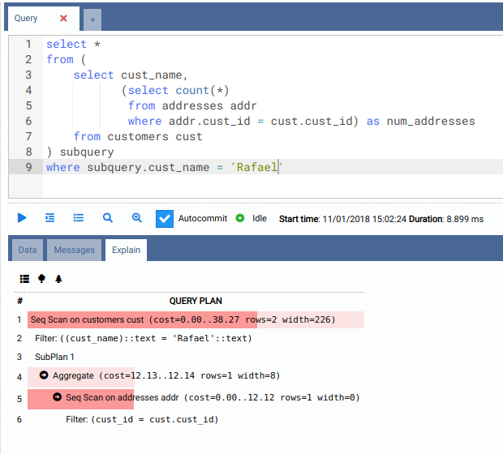
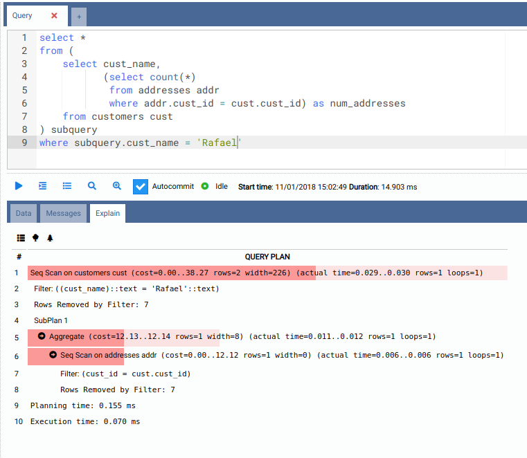
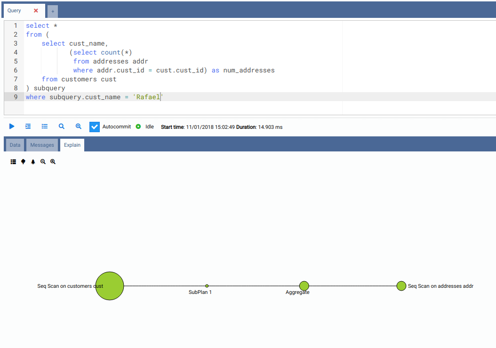
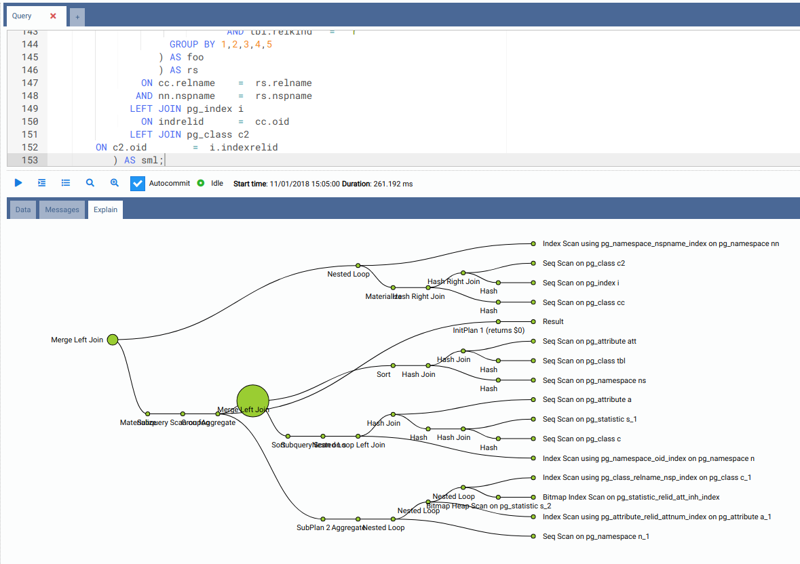

8. Visualizing Query Plans
OmniDB 2.2.0 introduced a very useful feature: graphical query plan visualization. This may come in handy when writing or optimizing queries, since it allows you to easily identify performance bottlenecks in your SQL query.
For this feature, SQL Query inner tab shows 2 buttons: Explain and Explain Analyze.
Textual visualization
When you click the Explain button, OmniDB will execute an EXPLAIN command in
your query. Initial visualization is textual and will show exactly the output
of the EXPLAIN command, but with colored bars representing the estimated cost.
The higher the cost, the darker and wider the bar.

When you click the Explain Analyze button, OmniDB will execute an EXPLAIN
ANALYZE command in your query. Beware that this command will really execute the
query. Also, the textual visualization will show much more information, and the
costs are not estimated as in those provided by the EXPLAIN command; they are
real costs.

Tree visualization
Both Explain and Explain Analyze modes also can graphically represent the textual output into a tree diagram. Each circle represent a node executed by the query plan, and the larger the circle, the higher the cost.

When queries become more and more complex, also its query plan can be very complex. With such queries (like the check bloat query we executed below) the tree visualization can be very interesting:

The query plan visualization component allows you to easily switch between textual and 2 tree visualizations, which can be zoomed in and out.